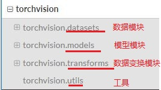
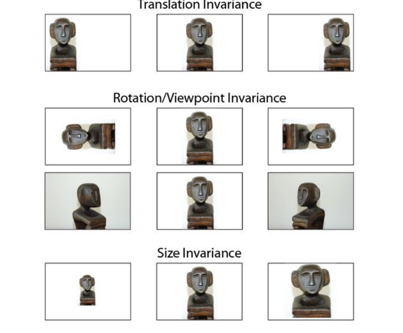
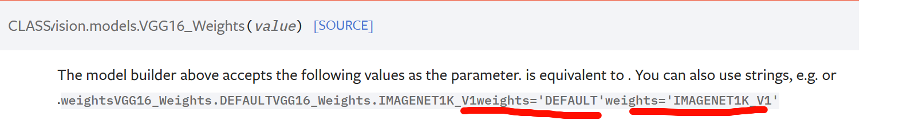

pytorch框架学习笔记
对于pytorch这种框架的学习，初学时不要死扣原理！！！要先会用，回过头来结合深度学习理论再弄懂框架封装的算子/方法的作用
一、Tensorboard
作用：可视化工具
1.1导入方式
1 | import torch.utils.tensorboard |
1.2 logs文件打开方式
1 | tensorboard --logdir=事件文件名 --port=6007(指定端口) |
1.3 安装OpenCV2（超级快)
1 | #安装opencv指令 |
1.4 SummaryWriter输出
1 | writer = SummaryWriter("logs") # 创建logs，输出的日志文件文件夹 |
Tips: 可以把一些scatter放在同一行上！！！ 其实就是放在同一个文件夹下一样简单
1 | writer.add_scalar('Loss/train', epoch_loss, epoch) |
二、Transforms
作用：常用的图像预处理方法

2.1 导包
1 | from torchvision import transforms |
2.2 如何使用
创建ToTensor对象，传入要转换的picture，返回tensor数据类型的变量
1 | imag_path = 'hymenoptera_data/hymenoptera_data/train/ants/6743948_2b8c096dda.jpg' |
2.3 为什么要使用
因为他包装了一些神经网络的理论参数。
2.4 normalnize标准化
逐channel对图像标准化，加速模型收敛、改善性能、保留颜色信息，转换为tensor 数据类型后像素值在[0,1]之间，但仍会不均匀，标准化后处理在[-1, 1]之间，模型收敛更快，而且逐channel处理能够有效的保留颜色信息
输入是tensor类型 ！！
1 | # Normalnize |
2.5 Resize和compose
注意Resize输入是PIL输出也是PIL，在使用Compose的时候注意列表中元素的顺序（因为他就是按照列表的顺序来处理)
1 | # Resize |
总结：要关注输入和输出，多看官方文档、关注需要什么参数
三、Dataloader
首先，torch.Size([3, 32, 32])意思是3通道的32X32的图片，dataloader导入方式：
1 | from torch.utils.data import DataLoader |
使用dataloader打包后：每个元素是batch的imgs和对应的targets组合的一个列表，比如下面就是一个元素：
1 | torch.Size([4, 3, 32, 32]) # 代表batch_size为4,3通道的32X32通道的图片 |
使用drop_last为true即表示为省略不足一个batch的，shuttle表示乱序选择，num_workers是选择线程。
注意：既然使用dataloader打包后输出事件文件使用：
1 | writer.add_images(tag, imgs, step) |
补充：
tensor数据类型介绍：严格来说有：float32、float64、int32、int64，但是tensor类的所有元素都是单一数据类型，不同也会自动转换；如果图片不是RGB图像，可以这样转换：
1 | image = image.convert('RGB') |
Windows上使用dataloader的多线程num_work，出报错，就使用单线程就好
四、nn.module
必须继承父类(nn.module)，重写init、写forward函数，示例代码：
1 | class modules(nn.Module): |
五、Convolution
5.1卷积到底起到什么作用：
卷积操作就是用一个可移动的小窗口来提取图像中的特征，这个操作可以捕捉到图像中的局部特征而不受其位置的影响
但，更清楚的说明是理解为用一个更小的窗口(特征)，或者说我我们需要的，这个作为过滤器，挨个滑动去匹配，滑动的每个位置都会计算出一个值，最终匹配程度最高的地方计算出的置同样也会最高，这样也就提取出特征了，而不会受到位置的影响

5.2与信号处理中卷积的对比理解
信号处理的卷积：把过滤器g函数反转和平移与f相乘得到的积的积分
而深度学习中卷积其实是互相关：就是两个函数之间的滑动点积，过滤器不需要反转，其实就是逐元素的乘法和加法。
- artihmetic：
torch.nn.functional直接提供激活函数、损失函数、卷积等操作，不需要创建额外的层
1 | # 就是当做一个函数包使用吧 |
注意看api， conv2的input、weight都是有要求的，输入要进行转换
1 | input = torch.reshape(input,[1, 1, 5, 5]) |
stride—步长， padding—填充项(默认为0），kernel_size是在网络过程调整，所以直接使用functional特别注意输入转换。
- layers
使用torch.nn里面的层，创建卷积层来执行卷积操作，创建子模块一定要继承Module。
conv1是2维卷积操作的实例对象，配置好了相关参数，也就是一个卷积层
1 | from torch.nn import Conv2d |
Module默认实现了call函数，并且在call函数里面调用forward函数，所以子类也就可以直接m1(imgs)调用forward函数，这里是直接返回卷积后的特征图。
补充：
‘./‘表示当前目录，’../‘表示上一级目录，比如上一级目录imags下的1.jpg：
1 | input = '../imags/1.jpg' |
torch.randn—>n是normalnize的缩写，就是生成[-1,1]之间标准化的随机数
torch.randperm —> permutation是排列的意思，就是生成排列的随机数
六、最大池化(maxpooling)
最大池化也称为下采样，过程和卷积类似，但是他的窗口没有权重，所以是计算窗口内的原始数据中的最大值，作用主要是保留输入的特征，并且减少输入（特征张量）的大小，不会改变通道数。
另外，最大池化能提取特定窗口的最大数据，无论数据在哪个位置，所以也就缓解了对位置的敏感性：比如在图像检测里面，使用最大池化能够使模型更关注行人，减少位置对任务的影响
不太恰当的例子：视频的分辨率1080—>最大池化—>720，视频模糊了很多，但是依旧还能传达重要的信息同时体积变小了很多，传输速度变快了很多。
汇聚层的输出通道数与输入通道数相同
1 | class model(nn.Module): |
七、搭建一个处理CIFAR-10的神经网络：
torch.flatten是直接展开为一维张量，而reshape是指定形状，如果不确定可以补一个-1，环境自动确定
非线性激活的relu函数中inplace参数，给true表示直接改变输入input
线性层Linear的三个参数:(in_features, out_features, bias)就跟DNN理解的一样，就是全连接层

7.1 网络结构：
1 | class zsk(nn.Module): |
使用Sequential，会按照顺序建立网络，简洁书写，同时可以使用writer.add_graph()可视化网络结构
7.2 损失与优化器：
了解常见损失就好，交叉熵特别适合使用于分类问题，但是他是算的一个batch的损失，损失函数的对象有backward函数，用来计算反向传播的梯度
梯度下降的时候—>注意每一次要清零梯度， 可以直接使用优化器的step来更新参数。
1 | for epoch in range(20): |
7.3 对现有模型进行修改和调整：
直接是调包，要会看官方文档诶！！！ 土堆教程里面的使用vgg16的参数是pretrained=true(false)，但是我使用Ctrl+P没有参数提示，看半天官方文档才发现是这个参数已经被弃用，使用的weights

1 | # 创建模型 |
7.4 模型的保存和加载：
模型保存：
一共两种方式，但都是使用torch.save，区别是保存的对象是模型还是模型参数
1 | # 保存方式1，同时保存模型结构和模型参数-->如果是自己定义的模型，使用load加载时需要导入模型类 |
模型加载：
加载同样也是两种方式，使用方式1保存的模型直接只用torch.load()加载，如果是pytorch中有的不需要导入模型，否则需要导入。
使用方式2保存的模型，直接使用torch.load()加载的是模型参数，得到一个OrderedDict也就保存参数的字典，所以正确方式是先建立模型结构，然后使用load_state_dict()加载参数到模型
1 | # 加载的方式2：只有参数，所以需要先建立 |
7.5 模型完整训练流程：
数据加载与处理—> 模型搭建 —> 模型训练与验证(每一轮都验证一次)—>模型的保存(刚学的)
数据处理：先加载数据(torchvision.datasets、torch.utils.data.Dataloader)、然后归一化什么的处理(torchvision.tramsforms)
模型搭建：按照别人网络结构搭建就行哈哈哈哈哈
模型训练：创建网络—> 确定损失函数 —>确定优化器 —>开始训练和验证(每个epoch都要验证和保存模型)
训练的主代码：
1 | for data in train_dataloader: |
所以，记录每一次训练(一个batch)，可以用来画损失曲线并不是没用，跟DNN中训练次数一样滴；即每个batch就是训练一次，每次都会计算一个损失，根据这个来画训练的损失曲线！！！
测试的主代码：
1 | with torch.no_grad(): # 在没有梯度状况下计算 |
7.6 细节注意：
不需要计算梯度，使用with torch.no_grad()
argmax函数，参数给1表示取一行中最大数的下标，参数给0就取一列中最大数的下标，然后就可以直接使用‘==’判断一下，在代码中就是从输出的多维列表中，每一行找到预测概率最大的下标，然后依次与targets对比，相等为true，然后使用sum求和布尔列表，true为1false为0，结果就是这一个batch预测对的个数，然后统计一轮正确个数。
m.train()或者m.eval()的设置只对特定的层起效
7.7 使用cuda加速：
方式1：
更改：网络模型、数据(输入、标签)、损失函数；就使用.cuda()就OK，麻烦的就是要用if这样的结构来保证不会出错，而且是每个地方都必须这样
1 | if torch.cuda.is_available(): |
方式二：
同上，需要加速的地方—>网络模型、损失函数、数据，使用.to（device）就行，上面直接指定设备。
1 | device = torch.device('cuda' if torch.cuda.is_available() else 'cpu') |
八、torch和numpy的互换
torch.from_numpy:把一个narray转换为torch的tensor类型
torch.numpy()：把一个tensor转换为numpy类型。
九、torch的计算图
pytorch是一个自动微分框架，会记录每一步的操作，构建一个计算图，主要的作用就是自动计算梯度，省去自己推导复杂的导数。
但是！pytorch的计算图依赖于每个操作的中间结果，如果中间结果被改掉，就无法追踪这些改动，计算梯度的时候就会出错，下面的代码就直接会报错。
1 | x = torch.tensor([-1.0, 2.0, 3.0], requires_grad=True) |
在做残差连接的时候遇到过一次这个问题，我直接使用y += x，会出现计算图中缓存的变量被修改的报错，当时报错的源代码：
1 | def forward(self, X): |
但只要修改一句残差的add为
1 | Y = Y + X |
就不会出现反向传播求解梯度时报错，gpt说是 += 是原地修改，也就是会导致计算图中的版本问题，然后我就纳闷呐，我另外一种方式为什么没有问题，渐渐的明白就是说，因为我执行的次序不一样，后面这种batchnorm在最后的方式，使用+=是对一个在计算图中可追踪的张量操作，所以不会有问题。
1 | Y = self.bn1(self.conv1(F.relu(X))) |
十、Resnet的一点体会
采用Conv → BatchNorm → ReLU这样的结构，卷积和归一化完成后才进行非线性激活，梯度的传播路径更加完整。这种设计保留了更多的信息流动，梯度的幅度可能更大，因此需要更小的学习率以避免过大的权重更新导致不稳定。
ReLU→ Conv→ BatchNorm 效果和原始的结果基本相同，这种次序的修改对模型整体的效果影响不大，先进行relu其实是削减了部分梯度，然后进行层归一化可能使得整体的梯度会更加平滑，所以使用与原baseline使用相同的学习率不会出现上面的梯度爆炸情况。